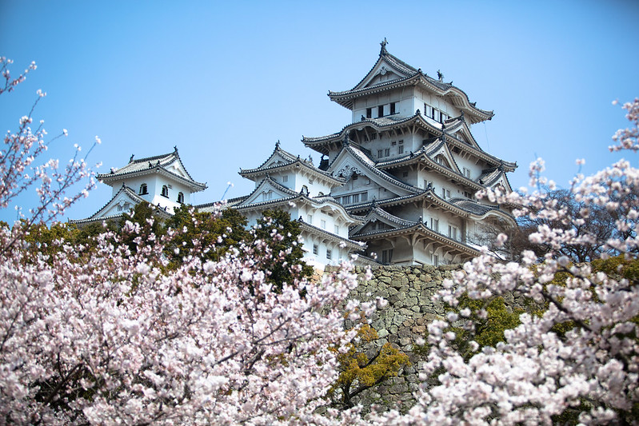

Imperial Tokyo

Tokyo's most famous landmark, the Imperial Palace with its beautiful
17th-century parks surrounded by walls and moats, is a must-see when
visiting the nation's capital. Don't be put off by the fact that the
majority of the palace is closed to the public (it's still in use by the
Imperial family), as there is still enough to see simply by strolling
the grounds.

Tokyo's most famous landmark, the Imperial Palace with its beautiful
17th-century parks surrounded by walls and moats, is a must-see when
visiting the nation's capital. Don't be put off by the fact that the
majority of the palace is closed to the public (it's still in use by the
Imperial family), as there is still enough to see simply by strolling the
grounds.
In addition to the many fine views of the palace from numerous
points in the surrounding parkland, visitors are permitted into the East
Higashi-Gyoen Garden and other areas that are opened to the public as part
of an organized tour. One of the most romantic views is of the famous
Nijubashi Bridge, or "double bridge," so named for its watery reflection.
Another one of the must-sees for tourists visiting Tokyo is the
famous Ginza shopping district. This always bustling area is home to the
Kabuki-za Theatre with its Kabuki performances, as well as the Shimbashi
Enbujo Theatre with its traditional Azuma-odori dances and Bunraku
performances.
2022 @ Project 1 by Christopher Altamirano